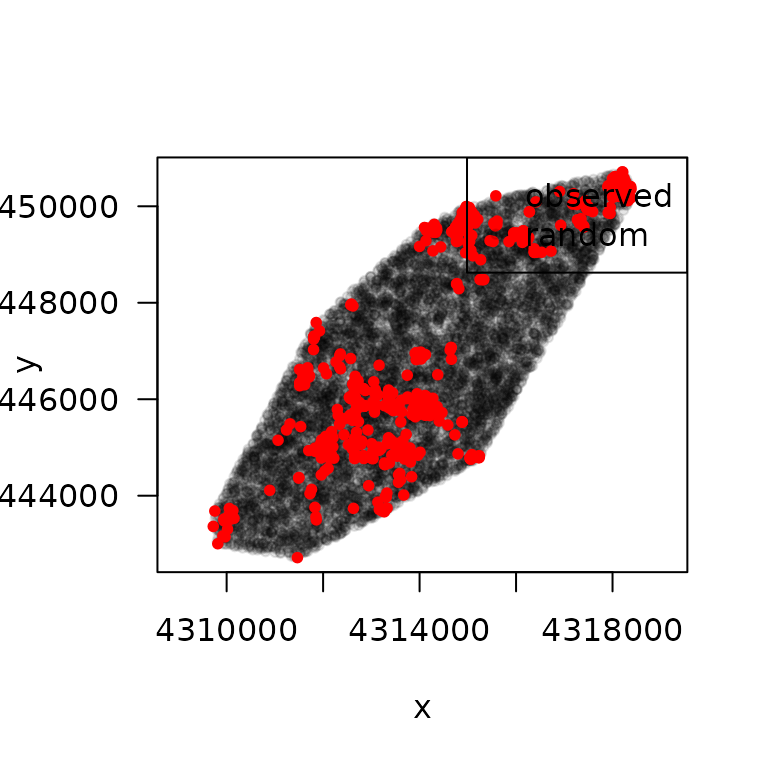
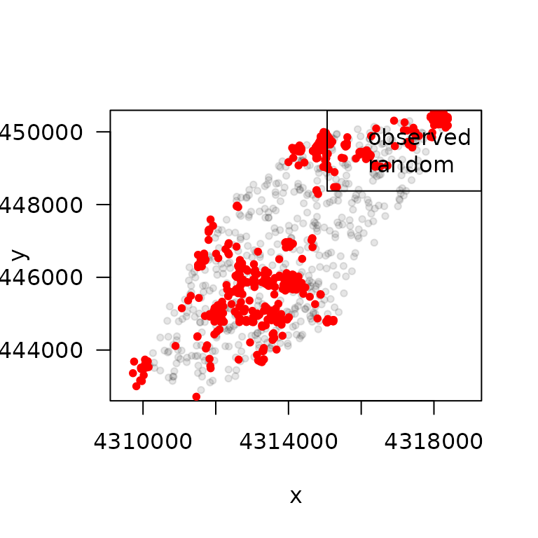
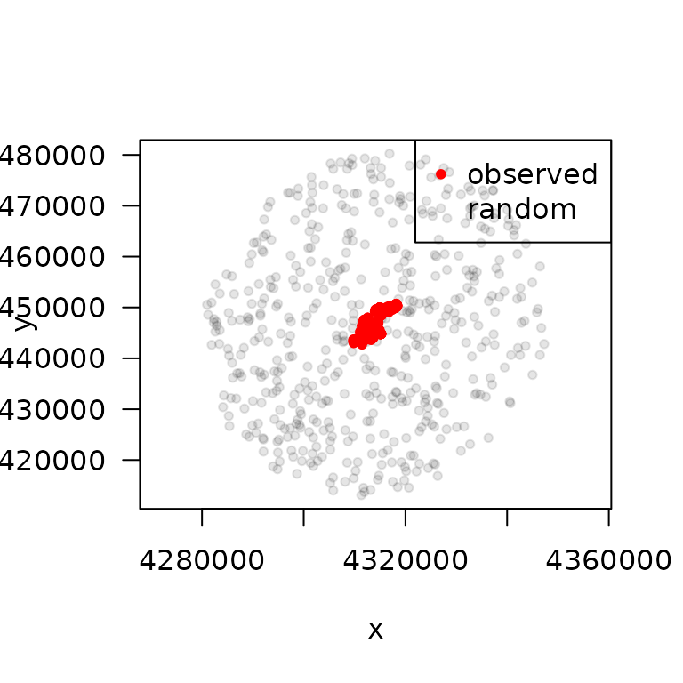

Resource Selection Functions (RSF) with
amt
Johannes Signer
2024-03-27
Source:vignettes/p3_rsf.Rmd
p3_rsf.RmdAbout
This vignette briefly introduces how one can fit a Resource-Selection
Function (RSF) with the amt package. We will be using the
example data of one red deer from northern Germany and one covariate: a
forest cover map.
Getting the data ready
First we load the required libraries and the relocation data (called
deer)
## # A tibble: 826 × 4
## x_ y_ t_ burst_
## * <dbl> <dbl> <dttm> <dbl>
## 1 4314068. 3445807. 2008-03-30 00:01:47 1
## 2 4314053. 3445768. 2008-03-30 06:00:54 1
## 3 4314105. 3445859. 2008-03-30 12:01:47 1
## 4 4314044. 3445785. 2008-03-30 18:01:24 1
## 5 4313015. 3445858. 2008-03-31 00:01:23 1
## 6 4312860. 3445857. 2008-03-31 06:01:45 1
## 7 4312854. 3445856. 2008-03-31 12:01:11 1
## 8 4312858. 3445858. 2008-03-31 18:01:55 1
## 9 4312745. 3445862. 2008-04-01 00:01:24 1
## 10 4312651. 3446024. 2008-04-01 06:00:54 1
## # ℹ 816 more rowsNext, we have to get the environmental covariates. A forest layer is
included in the package. Note, that this a regular
SpatRast.
sh_forest <- get_sh_forest()Prepare Data for RSF
Random Points
Before fitting a RSF we have to do some data preparation. We have to
generate random points, points that we think the animal could have used.
The random points define the availability domain. In amt
the function random_points is designed to do just that. The
function can be used in 3 different ways, depending to the type of
object that is passed to the function call.
- A
track_*(such as thedeerobject) can be passed to the functionrandom_points. The function then calculates a home range (the home-range estimator can be controlled with argumenthr). Within this home rangenrandom points are generated. The default value ofnis ten times the number of present points. - If a
hr-object (i.e., the result of a home-range estimation inamt) is passed torandom_points, points are generated within the home range. This allows to generate random points within any home range that was previously estimated inamt. Note, that this could be a home range of multiple animals. In this case, the functionrandom_pointshas one additional argument calledpresence. This argument takes atrk_*with the presence points and adds these points for convenience to the random points. - A
SpatialPolygons*-object orsf-object. The latter must containPOLYGONs orMULTIPOLYGONs as features. This can be useful in situation where a home range needs to be buffered, or when other geographical features are considered as the availability domain. As before, this method forrandom_pointsalso takes the argumentpresenceto optionally add the observed points to the output.
Lets now illustrate the three different situations. First we take
random points from a track_xy
r1 <- random_points(deer)
plot(r1)
With the argument n we can control the number of random
points (remember that the default is ten times as many points as we
observed points).
r1 <- random_points(deer, n = 100)
plot(r1)
Next, we can create random point within a home range, that we estimated before.
hr <- hr_mcp(deer)
r1 <- random_points(hr, n = 500)
plot(r1)Here, we can also add the observed points:
hr <- hr_mcp(deer)
r1 <- random_points(hr, n = 500, presence = deer)
plot(r1)
Finally, we can work with the home range and for example a buffer and then generate random points within the this new polygon.
hr <- hr_mcp(deer) |> hr_isopleths() |>
sf::st_buffer(dist =3e4) # add a 30km buffer
r1 <- random_points(hr, n = 500)
plot(r1)And we can also add the observed points.
hr <- hr_mcp(deer) |> hr_isopleths() |>
sf::st_buffer(dist =3e4) # add a 30km buffer
r1 <- random_points(hr, n = 500, presence = deer)
plot(r1)
Of course we are not restricted to the sf::st_buffer
function. All geometric operations from the sf package can
be used to generate arbitrarily complex availability domains.
Extract covariates
As the next step we have to extract the covariates at point. We can
do this with extract_covariates.
rsf1 <- deer |> random_points() |>
extract_covariates(sh_forest) Fitting RSF
Now all pieces are there to fit a RSF. We will use
fit_rsf, which is just a wrapper around
stats::glm with
family = binomial(link = "logit").
##
## Call:
## stats::glm(formula = formula, family = stats::binomial(link = "logit"),
## data = data)
##
## Coefficients:
## Estimate Std. Error z value Pr(>|z|)
## (Intercept) -2.46309 0.04402 -55.95 < 2e-16 ***
## forest 0.61707 0.07931 7.78 7.25e-15 ***
## ---
## Signif. codes: 0 '***' 0.001 '**' 0.01 '*' 0.05 '.' 0.1 ' ' 1
##
## (Dispersion parameter for binomial family taken to be 1)
##
## Null deviance: 5535.8 on 9085 degrees of freedom
## Residual deviance: 5479.1 on 9084 degrees of freedom
## AIC: 5483.1
##
## Number of Fisher Scoring iterations: 5Session
sessioninfo::session_info()## ─ Session info ───────────────────────────────────────────────────────────────
## setting value
## version R version 4.3.3 (2024-02-29)
## os Ubuntu 22.04.4 LTS
## system x86_64, linux-gnu
## ui X11
## language en
## collate C.UTF-8
## ctype C.UTF-8
## tz UTC
## date 2024-03-27
## pandoc 3.1.11 @ /opt/hostedtoolcache/pandoc/3.1.11/x64/ (via rmarkdown)
##
## ─ Packages ───────────────────────────────────────────────────────────────────
## package * version date (UTC) lib source
## amt * 0.2.2.0 2024-03-27 [1] local
## backports 1.4.1 2021-12-13 [1] RSPM
## bslib 0.6.2 2024-03-22 [1] RSPM
## cachem 1.0.8 2023-05-01 [1] RSPM
## checkmate 2.3.1 2023-12-04 [1] RSPM
## class 7.3-22 2023-05-03 [3] CRAN (R 4.3.3)
## classInt 0.4-10 2023-09-05 [1] RSPM
## cli 3.6.2 2023-12-11 [1] RSPM
## codetools 0.2-19 2023-02-01 [3] CRAN (R 4.3.3)
## DBI 1.2.2 2024-02-16 [1] RSPM
## desc 1.4.3 2023-12-10 [1] RSPM
## digest 0.6.35 2024-03-11 [1] RSPM
## dplyr 1.1.4 2023-11-17 [1] RSPM
## e1071 1.7-14 2023-12-06 [1] RSPM
## evaluate 0.23 2023-11-01 [1] RSPM
## fansi 1.0.6 2023-12-08 [1] RSPM
## fastmap 1.1.1 2023-02-24 [1] RSPM
## fs 1.6.3 2023-07-20 [1] RSPM
## generics 0.1.3 2022-07-05 [1] RSPM
## glue 1.7.0 2024-01-09 [1] RSPM
## highr 0.10 2022-12-22 [1] RSPM
## htmltools 0.5.8 2024-03-25 [1] RSPM
## jquerylib 0.1.4 2021-04-26 [1] RSPM
## jsonlite 1.8.8 2023-12-04 [1] RSPM
## KernSmooth 2.23-22 2023-07-10 [3] CRAN (R 4.3.3)
## knitr 1.45 2023-10-30 [1] RSPM
## lattice 0.22-5 2023-10-24 [3] CRAN (R 4.3.3)
## lifecycle 1.0.4 2023-11-07 [1] RSPM
## lubridate 1.9.3 2023-09-27 [1] RSPM
## magrittr 2.0.3 2022-03-30 [1] RSPM
## Matrix 1.6-5 2024-01-11 [3] CRAN (R 4.3.3)
## memoise 2.0.1 2021-11-26 [1] RSPM
## pillar 1.9.0 2023-03-22 [1] RSPM
## pkgconfig 2.0.3 2019-09-22 [1] RSPM
## pkgdown 2.0.7 2022-12-14 [1] any (@2.0.7)
## proxy 0.4-27 2022-06-09 [1] RSPM
## purrr 1.0.2 2023-08-10 [1] RSPM
## R6 2.5.1 2021-08-19 [1] RSPM
## ragg 1.3.0 2024-03-13 [1] RSPM
## rbibutils 2.2.16 2023-10-25 [1] RSPM
## Rcpp 1.0.12 2024-01-09 [1] RSPM
## Rdpack 2.6 2023-11-08 [1] RSPM
## rlang 1.1.3 2024-01-10 [1] RSPM
## rmarkdown 2.26 2024-03-05 [1] RSPM
## sass 0.4.9 2024-03-15 [1] RSPM
## sessioninfo 1.2.2 2021-12-06 [1] RSPM
## sf 1.0-16 2024-03-24 [1] RSPM
## survival 3.5-8 2024-02-14 [3] CRAN (R 4.3.3)
## systemfonts 1.0.6 2024-03-07 [1] RSPM
## terra 1.7-71 2024-01-31 [1] RSPM
## textshaping 0.3.7 2023-10-09 [1] RSPM
## tibble 3.2.1 2023-03-20 [1] RSPM
## tidyr 1.3.1 2024-01-24 [1] RSPM
## tidyselect 1.2.1 2024-03-11 [1] RSPM
## timechange 0.3.0 2024-01-18 [1] RSPM
## units 0.8-5 2023-11-28 [1] RSPM
## utf8 1.2.4 2023-10-22 [1] RSPM
## vctrs 0.6.5 2023-12-01 [1] RSPM
## xfun 0.43 2024-03-25 [1] RSPM
## yaml 2.3.8 2023-12-11 [1] RSPM
##
## [1] /home/runner/work/_temp/Library
## [2] /opt/R/4.3.3/lib/R/site-library
## [3] /opt/R/4.3.3/lib/R/library
##
## ──────────────────────────────────────────────────────────────────────────────